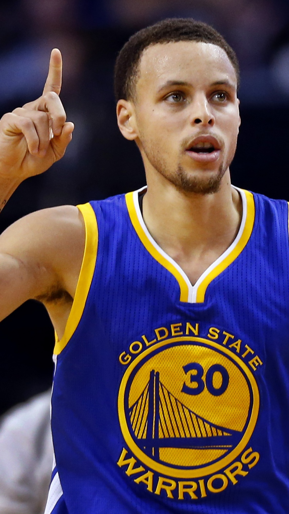

Born in Ohio in 1988 to former NBA player Dell Curry, Stephen Curry garnered national attention for his impressive play at Davidson College. Drafted in 2009 by the Golden State Warriors, he developed into one of pro basketball's top players with his stellar shooting skills. After winning Most Valuable Player honors in 2015, he led the Warriors to their first NBA championship in 40 years.
Stephen
Curry
I wasn't born basketball magician
336
46.3
FG3% FG3A 726
"Make it work no matter what you have to work with – that’s something that stuck with me very early on as a point guard. Adjust. Get creative. Try a different angle, a different lane, a different move or a different shot – just make it work." - Stephen Curry
There is no doubt that Stephen Curry is one of the best players in NBA history. He is a miracle.
FG%---------51.3%
FG3%--------46.3%
FT%----------90.4%
LET'SSET THE WORLD ON FIRE
让我们点燃这个世界
Despite his slight frame and boyish looks, Curry proved more than capable of handling the NBA opposition with his shooting and ball-handling abilities. The 6'3" guard averaged more than 22 points per game after the 2010 All-Star break, and wound up finishing second in the Rookie of the Year balloting.  His impressive play earned him a spot on the USA Men's Basketball Senior National Team, which won the gold medal at the 2010 World Championships. Curry sustained a sprained ankle while practicing with the national team, an injury that lingered for the following two seasons. A return to full health allowed him to regain his dazzling form in 2012-13, and Curry responded by setting an NBA record with 272 three-pointers. Named the Western Conference Player of the Month in April, he followed by leading the Warriors to an upset against the Denver Nuggets in the first round of the playoffs.
After earning his first All-Star nod in 2014, Curry reached new levels of performance and popularity the following season. As one half of the "Splash Brothers" duo, which also featured sharpshooting guard Klay Thompson, Curry led an exciting Warriors team to an early 16-game win streak and was the leading vote-getter for the 2015 All-Star Game.
NBA Skills Challenge champion
.............
2011
BET Award for Sportsman of the Year
........
2015
AP Male Athlete of the Year
................
2015
S
" I CAN GET BETTER "
——— Stephen Curry
“ I've never been afraid of big moments. I get butterflies... I get nervous and anxious, but I think those are all good signs that I’m ready for the moment. „